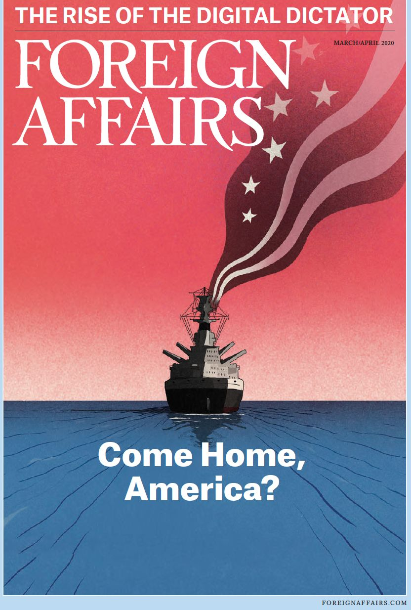
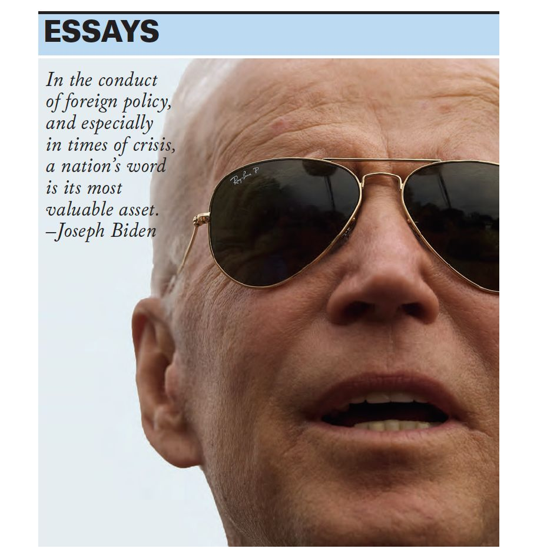
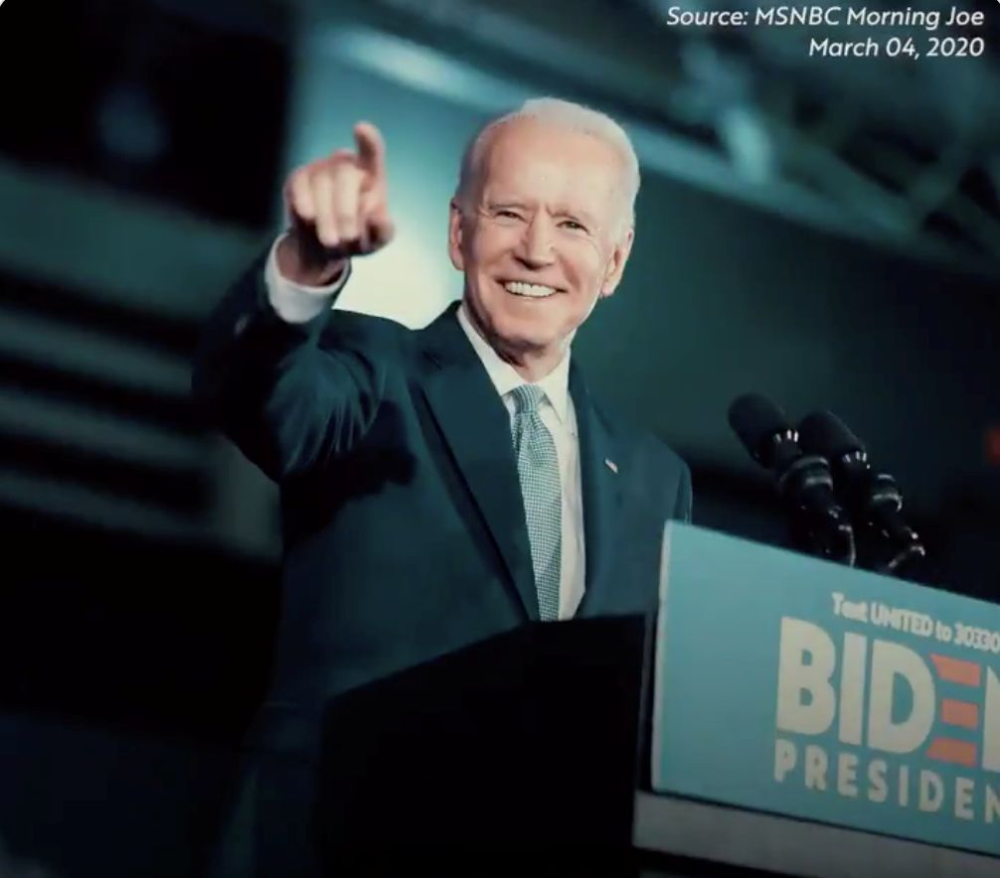

收录于合集
#中美关系 13 个
#美国研究 24 个

作品简介
【作者】 小约瑟夫·拜登（JOSEPH R. BIDEN, JR.），美国民主党政治家，前美国副总统（2009-2017），美国第110届国会参议院外交委员会主席，且曾经担任参议院司法委员会主席，目前拜登已获得264张选举人票，仅差6票即成为美国下一任总统。
【编译】 施榕（国政学人编译员，北京大学国际关系学院博士生）
【审校】 陈勇、崔宇涵
【排版】 杨洋
【美编】 黄竹音
【来源】
Joseph R. Biden, Jr., “Why America Must Lead Again? Rescuing U.S. Foreign Policy After Trump,” Foreign Affairs , Vol. 22, No. 2, 2020, pp. 64-76.
期刊介绍
《外交事务》（Foreign Affairs），创刊于1922年，是美国外交关系委员会发布的国际关系和美国外交政策的美国杂志，被誉为“美国最具影响力的外交政策杂志”之一。根据2018年的期刊引文报告（Web of Science）, 该期刊的影响因子为4.390，在“国际关系”类别的91种期刊中排名第3。
小约瑟夫·拜登：为什么美国必须再次领导世界—拯救特朗普之后的美国外交政策

小约瑟夫·拜登
内容提要
几乎不管用什么测量方法，自2017年1月20日奥巴马总统和我离任之后，美国的信誉和影响力都在下降。特朗普总统贬低、削弱甚至在某些情况下还抛弃了美国的盟友和伙伴。他出乎意料地向我们的情报人员、外交官和军队发难。他挥霍了我们应对国家安全挑战的筹码，但实际上却没有任何成果。他对美国的朋友和对手都发起了不明智的贸易战，损害了美国的中产阶级。他已经放弃了美国在动员集体行动以应对新威胁上的领导地位，尤其是那些本世纪独有的威胁。最重要的是，他背离了赋予我们国家力量、将我们作为一个民族团结起来的民主价值观。与此同时，美国面临的全球挑战——从气候变化和大规模移民到技术破坏和传染病——已经变得更加复杂和紧迫，而威权主义、民族主义和非自由主义的快速发展削弱了我们集体应对这些挑战的能力。民主——因党派之争而瘫痪、因腐败而蹒跚、因极度的不平等而备受压迫——正经历着难以满足人民需求的艰难时期。人们对民主制度的信任在下降，对“他者”的恐惧在上升。美国精心构建的国际体系正在分崩离析。特朗普和世界各地那些蛊惑民心的政客为了自己个人的政治利益却仍未悬崖勒马。对下一任美国总统而言，收拾（特朗普留下的）残局将是一项艰巨的任务。他或她将不得不挽救我们的声誉，重建人们对我们领导能力的信心，动员我们的国家和盟友迅速应对新的挑战，这已经迫在眉睫了。若我成为总统，我将立即采取措施复兴美国的民主和联盟体系，保护美国的经济前途，并再次让美国领导世界。现在不是恐惧的时候，而是要发挥我们的力量和大无畏精神的时候，正是这种力量和大无畏精神使我们赢得了两次世界大战的胜利，并拉下了铁幕。民主和自由主义战胜了法西斯主义和独裁统治，创造了自由世界。但这场竞赛不仅定义了我们的过去。它也将定义我们的未来。

文章导读
一、 在国内复兴民主
首先且最重要的是，我们必须修复和重振我们自己的民主，即使我们加强了与世界各地的民主国家的联盟（coalition of democracies）。美国成为世界进步力量和动员集体行动的能力始于国内。这就是为什么我要改造我们的教育系统、改革刑事司法体系、消除不平等和结束大规模的监禁，恢复《选举权法》（Voting Rights Act）以确保每个人的诉求都能被听到，并且重拾政府的透明度和问责制。然而，民主不仅仅是美国社会的基础，也是我们力量的源泉。它加强和扩大了我们的领导地位，以保证我们在世界上的安全。它是我们创造力的引擎，推动着我们经济的繁荣。它是我们是谁、我们如何看待世界以及世界如何看待我们的核心。它使我们能够进行自我纠正，并随着时间的推移仍不断努力地实现我们的理想。作为一个国家，我们必须向世界证明，美国已准备好再次发挥领导作用——不仅要以我们的力量为榜样，而且要以我们的榜样为力量。为实现这一目标，作为总统，我将迈着坚定的步伐来复兴我们的核心价值观。我将立即废除特朗普政府在边境将父母和孩子分开的残酷且愚蠢的政策；结束特朗普的（难民）庇护政策；终止旅行禁令；命令对弱势群体的临时保护身份进行审查；以及将我们每年接纳难民的数额设定在125000人，并争取逐年增加这一额度，以使其与我们的责任和价值观相匹配。我将重申禁止酷刑和恢复美国军事行动的透明度，包括奥巴马- 拜登政府时期所实行的减少平民伤亡的政策。我将确保白宫再次成为保卫我们民主价值观的核心支柱和机构，而不是首要攻击者。我将执行美国的法律，但不会像特朗普那样针对特定的群体、违反正当程序或拆散家庭。我将在保护我们的边界的同时确保移民的尊严，维护他们寻求庇护的合法权利。我已经发布了详细概述这些政策的计划，并描述了美国应如何将重点放在促使移民来到我们西南边境的根本原因。作为副总统，我曾争取到了两党对一项7.5亿美元援助计划的支持，这一计划旨在鼓励萨尔瓦多、危地马拉和洪都拉斯的领导人履行承诺，即打击迫使人们离开家园的腐败、暴力和普遍存在的贫困。萨尔瓦多等国的安全状况有所改善，移民流动开始减少。若我成为总统，我将在这一援助计划的基础上制定一项为期四年、耗资40亿美元的全面区域战略，要求各国贡献自己的资源，并进行重大的、具体的和可核查的改革。我还将采取措施，处理假公济私、利益冲突、黑钱和腐败，这些腐败服务于狭隘的、私人的或外国的议程，破坏我们的民主。我将首先争取通过一项宪法修正案，将私人资金从联邦选举中完全剔除。此外，我还将提出一项法律，加强对试图影响美国联邦、州或地方选举的外国人或外国政府的禁令，并设立一个新的独立机构——联邦道德委员会（Commission on Federal Ethics）, 确保这个和其他反腐败法律的有力执行。在采取了这些必要的步骤来加强美国的民主基础并激励其他国家采取行动之后，我将邀请世界各地的民主国家领导人把加强民主重新列入全球议程。今天，民主面临着自上世纪30年代以来最大的压力。自由之家的报告显示，在1985年至2005年一直被列为“自由”的41个国家中，有22个国家的自由程度在过去5年里出现了下降。腐败是一种潜在的流行病，它助长了压迫，腐蚀了人的尊严，为独裁的领导人提供了一个强大的工具，使其得以在全世界范围内分化和削弱民主国家。然而，当世界上的民主国家都指望着美国代表着真正领导自由世界的价值观时，特朗普似乎站在了另一边，他一边说着独裁者的话，一边对民主党人表示蔑视。通过领导美国现代史上最腐败的政府，他给了各地的窃国者（kleptocrat）以可趁之机。在我执政的第一年，美国将组织和主办一次全球民主峰会（Summit for Democracy）以重振自由世界里各国的精神和共同目标。它将把世界上的民主国家团结起来以巩固我们的民主制度，并制定一个共同的议程。美国将以奥巴马- 拜登政府在核安全峰会上建立的成功模式为基础激励各国在三个领域做出新的重大承诺：打击腐败、反对威权主义、促进人权。作为美国在峰会上的承诺，我将发布一项总统政策指令，将打击腐败确立为国家安全利益和民主责任的核心。民主峰会还将包括来自世界各地站在捍卫民主前线的公民社会组织。峰会成员将呼吁包括科技公司和社交媒体巨头在内的私营部门采取行动，这些私营部门必须认识到自己在维护民主社会和保护言论自由方面的责任和压倒一切的利益。与此同时，言论自由不能成为技术和社交媒体公司传播恶意谎言的许可证。
二 、为中产阶级制定外交政策
其次，我领导的政府将为美国人民在全球经济中取得成功提供条件——为中产阶级制定外交政策。为了在未来的竞争中战胜中国或其他任何国家，美国必须增强其创新优势，团结世界各地民主国家的经济力量，以对抗经济手段的滥用和减少不平等。经济安全就是国家安全。我们的贸易政策必须从国内开始，通过加强我们最重要的资产——我们的中产阶级——并确保每个人都能分享这个国家的成功，不论种族、性别、地区、宗教信仰、性取向或残疾。这将需要对我们的基础设施以及教育进行大量投资。我们必须给每个学生必要的技能以获得一个良好的、适应时代的工作；确保每个美国人都能获得高质量的、负担得起的医疗保健；将最低工资提高到每小时15美元；领导清洁经济革命为美国创造1000万个新的就业岗位。我将把对研究与开发的投资作为总统任期的基石，让美国在创新方面处于领先地位。在清洁能源、量子计算机、人工智能、5G、高铁以及消灭癌症等方面，我们没有理由落后于中国或其他任何国家。我们有世界上最好的研究型大学。我们有强大的法治传统。最重要的是，我们有非常多的工人和创新者，他们从未让我们的国家失望。针对中产阶级的外交政策也将致力于确保国际经济规则不会对美国不利，因为当美国的企业在公平的竞争环境中竞争时，它们就会赢。我相信公平贸易。世界上超过95%的人口生活在我们的国家之外——我们想开发这些市场。我们需要能够在美国制造最好的产品，并将它们销往世界各地。这意味着要取消不利于美国人民的贸易壁垒并抵制全球滑向保护主义的危险。这正是一个世纪前在第一次世界大战后发生的事情——它加剧了大萧条，并导致了第二次世界大战。错误的做法是逃避现实和不再谈论贸易协定。不管有没有美国，各国都会继续贸易合作。问题是，管理贸易的规则是谁制定的?谁来确保这些规则能保护工人、环境、透明度和中产阶级的收入? 应该由美国——而不是中国——来领导这些规则的制定。若成为总统，我不会签署任何新的贸易协定，直到我们为美国人民在全球经济中取得成功做好了准备。我不会在没有劳工和环保领袖以有意义的方式参与谈判的情况下达成新的协议，也不会在谈判中省略掉强有力的执行条款以使我们的合作伙伴遵守他们所签署的协议。中国是一个特殊的挑战。我与它的领导人有过长期的接触，我理解我们面临的挑战。中国正通过扩大其全球影响力，推广自己的政治模式和投资未来的技术来打一场持久战。特朗普把从美国最亲密盟友——从加拿大到欧盟——的进口列为国家安全威胁，目的是征收破坏性的、不计后果的关税。通过切断我们对合作伙伴的经济影响，特朗普削弱了我们国家应对真正经济威胁的能力。美国确实需要对中国采取强硬态度。如若按中国所愿，它将继续抢夺美国和美国公司的技术和知识产权。它还会继续通过补贴来让国有企业获得不公平的优势，以及在主导未来技术和产业方面占据上风。应对这一挑战的最有效的方式是建立一个美国盟友及合作伙伴的统一战线，哪怕在诸如气候变化、核不扩散、全球卫生安全等利益趋同的议题上我们将寻求与中国合作。就我们自身而言，美国约占全球GDP的四分之一。当与其他民主国家联合起来时，我们的力量将翻倍。这给了我们巨大的影响力来制定从环境到劳工、贸易、技术和透明度等各个方面的规则，所以这些规则将继续反映民主的利益和价值观。
三、 回到谈判桌前
我的外交政策议程将使美国重新回到谈判桌前，使美国能够与盟友合作以动员集体行动应对全球威胁。世界不是自己组织起来的。70年来，在民主党和共和党总统的领导下，美国在制定规则、达成协议、建立指导国家间关系和促进集体安全及繁荣的机构方面发挥了主导作用——直到特朗普上台。如果我们继续跟着他放弃美国所肩负的责任，那么将会发生以下两种情况之一:要么有国家将取代美国的位置，但不是以促进我们的利益和价值观的方式；要么没有国家会挺身而出，混乱将随之而来。不管怎样，这都不利于美国。美国的领导不是绝对正确的，我们犯过错误。太多时候，我们只是依靠我们的军事力量，而不是利用我们的全部力量。特朗普那灾难性的外交政策纪录每天都在提醒我们失衡的和不连贯的做法是危险的，它会剥夺和诋毁外交的作用。我将毫不犹豫地保护美国人民，包括在必要时使用武力。在美国总统必须扮演的所有角色中，最重要的角色莫过于三军统帅。美国拥有世界上最强大的军队，若成为总统，我将确保它继续维持这一状态，并为我们的军队提供必要的投资以应对本世纪的挑战。但是使用武力应该是最后的手段，而不是首选。只有在目标明确且切实可行、并得到美国人民知情同意的情况下，才能将其用于维护美国的重大利益。现在是结束无止境的战争的时候了，这些战争使美国付出了无数的鲜血和财富。正如我长期以来所主张的，我们应该撤回我们在阿富汗和中东战争中的绝大多数军队，并将我们的使命狭义地定义为击败基地组织(al Qaeda)和伊斯兰国(Islamic State)。我们也应该停止对沙特领导的也门战争的支持。我们必须将我们的注意力集中在国内外的反恐问题上。困守在无法取胜的冲突中，会削弱我们在其他需要我们关注的问题上发挥领导作用的能力。外交应该是维护美国实力的第一工具。我很自豪美国外交在奥巴马- 拜登政府时期所取得的成就：从推动巴黎气候协议生效到领导国际社会应对西非爆发的埃博拉疫情，再到达成具有里程碑意义的多边协议以阻止伊朗获得核武器。外交不仅仅是一系列的握手和拍照，它还建立和处理各种关系，并确定共同关心的领域，同时管理冲突。它需要纪律、连贯的政策制定过程，以及一个由经验丰富和得到授权的专业人士所组成的团队。若成为总统，我将把外交提升为美国外交政策的主要工具。我将重振被本届政府掏空的外交使团，把美国外交重新交到真正的专业人士手中。外交也需要信誉，而特朗普摧毁了我们的信誉。在实施外交政策时——特别是在危机时期——一个国家的承诺是它最宝贵的资产。然而，退出一个又一个条约，在一个又一个政策上食言，逃避美国的责任，在大大小小的事情上撒谎，特朗普已经让美国的承诺破产了。他还疏远了美国最需要的民主盟友。他把北约当作美国所经营的勒索保护费的组织（protection racket）。我们的盟友应该承担其分内之事，这就是为什么我对奥巴马- 拜登政府促使北约成员国承诺增加国防开支而感到自豪(特朗普现在声称这是他的功劳)。但是这个联盟超越了金钱；美国的承诺是神圣的，不是交易性的。北约是美国国家安全的核心，也是自由民主理想的堡垒——这是一个价值观的联盟，它比通过胁迫或金钱建立的伙伴关系更持久、更可靠、更强大。若成为总统，我将做的不仅仅是修复对我们而言具有历史意义的伙伴关系，而且将带头为我们今天所处的世界而重新构想这些关系。克里姆林宫担心一个强大的北约，一个现代历史上最有效的政治军事联盟。为了对抗俄罗斯的挑衅，我们必须维持联盟的强大军事能力，同时扩大其应对非传统威胁的能力，如武器化的腐败（weaponized corruption）、虚假信息和网络盗窃。我们必须让俄罗斯为违反国际规范付出实际代价，并与俄罗斯的公民社会站在一起，它们曾一次又一次勇敢地站出来反对现任总统的窃贼式威权统治体系（kleptocratic authoritarian system）。为了重新获得世界的信任，我们必须证明美国言出必行。这对于我们这个时代所面临的挑战而言尤为重要，这些挑战包括:气候变化、核战争的新威胁和破坏性技术。美国必须领导世界应对我们所面临的存在性威胁（existential threat）——气候变化。如果我们做不到这一点，其他一切都不重要了。我将在国内进行大规模的紧急投资以使美国在2050年拥有零排放的清洁能源经济。同样重要的是，由于美国的（二氧化碳）排放量只占全球总量的15%，我将利用我们的经济和道德威信推动世界采取坚定的行动。我将在拜登政府执政的第一天重新加入巴黎气候协定，然后召集世界主要碳排放国举行一次峰会，号召各国提高它们的雄心以取得快速的进展。我们将采取强有力的措施，确保当我们履行自己的承诺时，其他国家不会在经济上削弱美国。这包括坚持要求中国——世界上最大的碳排放国——停止通过“一带一路”倡议来资助价值数十亿美元的污染性化石燃料能源项目以补贴煤炭出口和将污染外包给其他国家。在核不扩散和核安全问题上，美国如果放弃自己所谈判的协议，就无法发出可信的声音。从伊朗到朝鲜，从俄罗斯到沙特阿拉伯，特朗普使得核扩散、新一轮核军备竞赛、甚至是使用核武器变得更加可能。若成为总统，我将重申我们对在新时代进行军备控制的承诺。奥巴马- 拜登政府通过谈判所达成的具有历史性意义的伊朗核协议阻止了伊朗获得核武器。然而，特朗普轻率地将该协议搁置在一边，促使伊朗重启核计划且变得更加挑衅，增加了该地区爆发另一场灾难性战争的风险。我对伊朗政权不抱任何幻想，但可以用一种聪明的而不是弄巧成拙的方式来应对伊朗的威胁，特朗普却选择了后者。如果伊朗能重新严格地遵守协议，美国将重新加入该协议并利用我们对外交的新承诺来与我们的盟友一起对其进行巩固。对于朝鲜，我将授权我们的谈判代表与我们的盟友和其他国家(包括中国)发起一场持续且相互协作的运动以推进我们共同的目标：朝鲜无核化。我还将寻求延长美国和俄罗斯之间的战略稳定之锚——《新削减战略武器条约》(New START treaty)——的期限，并以此作为新的军备控制安排的基础。我还将采取其他措施表明我们对减少核武器作用的承诺。正如我在2017年说过的，我认为美国核武库的唯一目的应该是威慑，并在必要时对核打击进行报复。若成为总统，我将与美国军方和盟国进行磋商，努力将这一信念付诸实践。当谈到未来的技术（如5G和人工智能）时，其他国家正在投入国家资源来主导它们的发展并决定如何使用它们。美国需要做更多的工作来确保这些技术被用来促进更大范围的民主和共同繁荣，而不是限制国内外的自由和机会。当新技术重塑我们的经济和社会时，我们必须确保这些进步的动力仍受到法律和道德的限制，并且避免“竞次”（race to the bottom）行为。现在该是由美国领导打造一个使民主社会共同繁荣的技术时代的时候了。这些雄心勃勃的目标——若没有其他民主国家支持下的美国领导——都是不可能实现的。我们在国内外都有竞争对手，它们希望利用我们社会的裂痕破坏我们的民主，瓦解我们的联盟体系，并使国际体系回到“强权即公理”的时代。应对这一威胁的措施是更多的开放、更多的友谊、更多的合作、更多的联盟和更多的民主。
** 四、准备好领导** ** **
普京想告诉自己以及任何相信他的人，自由主义思想“已经过时了”，但他之所以这样做是因为他害怕它的力量。世界上没有任何一支军队能像自由的理念那样不受限制地在人与人之间传播，跨越国界、语言和文化的障碍，并将普通公民团体变成活动家、组织者和变革推动者。我们必须再次利用这种力量团结自由世界以应对当今世界所面临的挑战。现在轮到美国带头了，其他任何国家都没有这种能力。没有其他国家是建立在这一理念之上的。我们必须捍卫自由和民主，恢复我们的信誉，以坚定的乐观态度和决心展望我们的未来。
【美国研究】特朗普的重大失误：美国正在让中国再次伟大 | 国政学人 第530期
_ ** _ ** _ ** _
本文由国政学人独家编译推荐，文章观点不代表本平台观点，转载请联系授权。**__

国政学人
支持学术公益与知识传播
微信扫一扫赞赏作者 __赞赏
已喜欢，对作者说句悄悄话
取消 __
发送给作者
发送
最多40字，当前共字
上一页 1/3 下一页
长按二维码向我转账
支持学术公益与知识传播
受苹果公司新规定影响，微信 iOS 版的赞赏功能被关闭，可通过二维码转账支持公众号。